Данное задание удобнее всего решать кодом (хотя можно и ручками, но это дольше). Представляет из себя маленькую программу, 15-20 строк, которую надо написать по заданному алгоритму.
Пример 1)
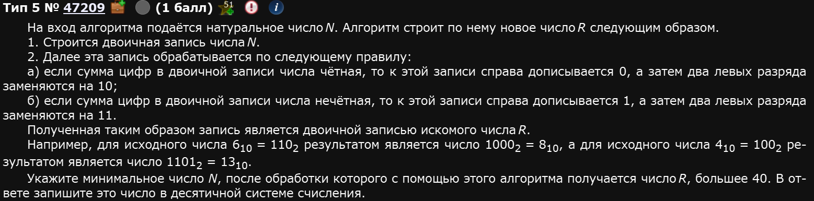
Во-первых, определим функцию, которая будет переводить число в двоичную систему:
def f(n): bn = bin(n)[2:] #print(bn)
Обратите внимание: мы срезаем 2 первых символа от преобразования в двоичную систему. Зачем? Вот за этим:
Почему жизнь так устроена? Че ему неймется простым 0 и 1? Откуда высер в виде некоего “0b” перед самим числом? Если кратко:
Префикс 0b в Питон используется для обозначения чисел в двоичной системе, чтобы однозначно указать, что это двоичное представление, а не десятичное или другое. Этот префикс добавляется функцией bin(), и его наличие помогает различать числовые системы в коде, делая программу более понятной и предотвращая ошибки.
В других числовых системах Питон также использует аналогичные префиксы:
0b для двоичных чисел (например, 0b11010111),
0o для восьмеричных чисел (например, 0o327),
0x для шестнадцатеричных чисел (например, 0xD7).
Префиксы помогают интерпретатору Питон точно понимать систему счисления числа.
Спасибо, GPT, что бы я без тебя делал,,,
В общем да, чтобы получить само число, надо срезать 2 первых символа простым и классическим срезом.
Далее, рассуждаем так: т.к. это двоичное число, то сумма цифр может быть четной или нечетной только лишь за счет единиц. Т.е. само условие надо писать относительно единиц. Благо есть крутой метод, который сильно упростит жизнь - count. Используется так:
if bn.count('1') % 2 == 0:
Мы только что буквально сказали питону: “Братик, вот смотри, надо крч в переменной bn найти нечто, что называется “1” и если сумма этих “1” там делится на 2 без остатка, то,,,”. Если подобное условие выполняется, тогда пусть будет некая другая переменная, к которой будем дописывать то, что просят по условию: нолик справа и 10 слева, если таки кратно 2 и 1 справа и 11 слева, если не кратно 2 а затем перевести обратно в десятичную систему:
def f(n): bn = bin(n)[2:] #Перевод в двоичну #print(bn) if bn.count('1') % 2 == 0: #Условие на четность r = bn + '0' #Дописываем справа нолик #print(r) r = '10' + r[2:] #Дописывам слева 10 #print(r) else: # Иначе r = bn + '1' #Дописываем справа 1 #print(r) r = '11' + r[2:] #Дописываем слева 11 #print(r) #print(r) r = int(r,2) #Переводим обратно в десятичную, здесь 2 - основание системы счисления, ИЗ которой переводим #print(r) return r # Возвращаем результат функции
Теперь у нас есть функция, которая делает все необходимые действия, красота. Осталось найти наименьшее n. Естественно, не вручную.
Давайте обозначим идею: пускай у нас будет список (изначально пустой), в который мы будем докидывать n-ки, если наша f(n) окажется больше 40, что и нужно по условию. Попробуем:
otv = [] #Изначально пустой списокfor n in range (1,300): #Цикл, который будет прогонять от 1 до 300, числа взяты от балды if f(n)>40: #Условие, что f(n) должно быть больше 40 otv.append(n) #Тут у нас метод append буквально докидывает в список нужные n-ки при выполнении условия, причем с конца # Не забываем запринтить ответ в конце: print(min(otv)) #Да, вот так вот тупо, просто min от списка
Вуаля, у нас есть полный код:
Код выдаст нам 16. Это и есть ответ.
Ответ: 16.
Пример 2)
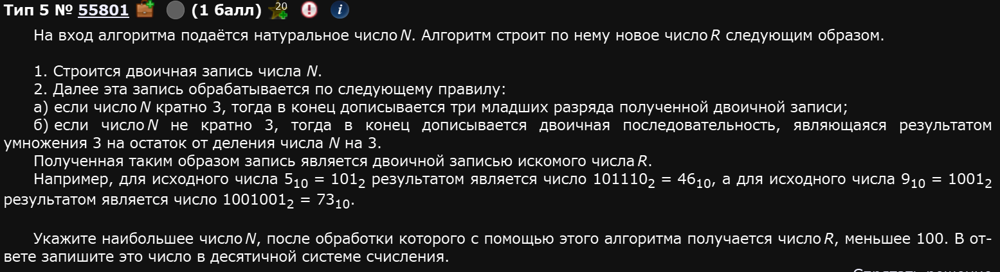
Последняя часть программы с поиском максимального почти такая же, за исключением самого условия: теперь ищем не минимальное, а максимальное и не больше 40, а меньше 100:
otv = [] #Списочекfor n in range(1,300): #Циклик if f(n) < 100: #Условие otv.append(n) #Забиваем списочекprint(max(otv)) #Выводим из списочка максимальный элемент
А вот функция отличается в неприятную сторону. Для того, чтобы дописывать младшие разряды проще и понятнее всего использовать отрицательные индексы среза:
if n % 3 == 0: r = bn + bn[-3:]
В Истинном фундаменте представлен экскурс в срезы.
else: r = bn + bin((n % 3)*3)[2:]
Тут у нас результат получается так: берется число bn, к нему прибавляется перевод двоичного числа - остатка от деления n на 3, умноженного на 3 (как обычно при использовании bin надо срезать 2 символа слева).
Наконец, переводим результат в десятичную int-ом и возвращаем r в функцию. По итогу имеем следующую функцию:
def f(n): bn = bin(n)[2:] #print(bn) if n % 3 == 0: r = bn + bn[-3:] else: r = bn + bin((n % 3)*3)[2:] #print(r) r = int(r,2) #print(r) return r
Ну и осталось соединить последнюю часть кода с этой функцией, получится полная программа:
Которая выдаст нам ответ 22.
Ответ: 22.
Пример 3)
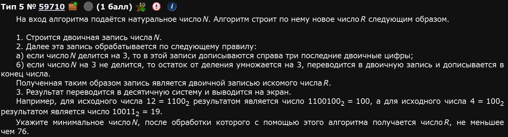
Буквально то же самое, что и предыдущее задание, слово в слово, но теперь изменилось условие в цикле:
Ответ: 11
Пример 4)
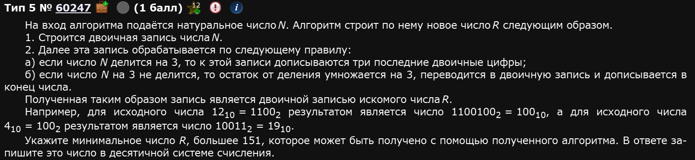
Для разнообразия, покажу немного другой способ решения:
В данном случае min ищется более наглядно. В остальном, код все тот же.
Ответ: 163
Пример 5)
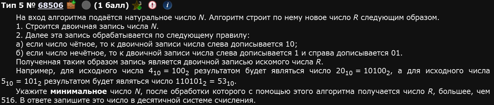
В этой задаче у нас немного поменялись условия внутри функции.
Ответ: 65
Пример 6)
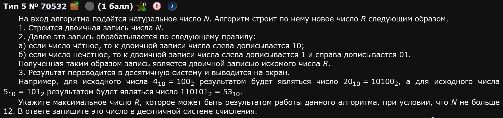
А вот тут можно просто глазами пробежаться, посмотреть какой из них максимальный т.к. самих итераций цикла не очень много.
Ответ: 109
На примере этого же задания как можно еще короче решать, без определения функции:
Само условие if осталось нетронутым, преобразование int и bin в том же месте, написаны также. Разница в том, что мы сразу же указываем цикл и пишем в нем же условие. Менее наглядно, зато быстрее.
Пример 7)
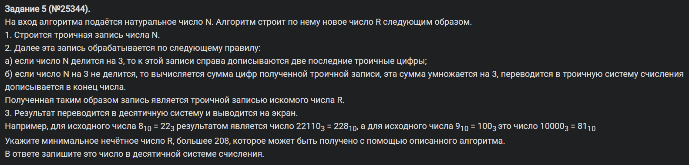
Пример 8)
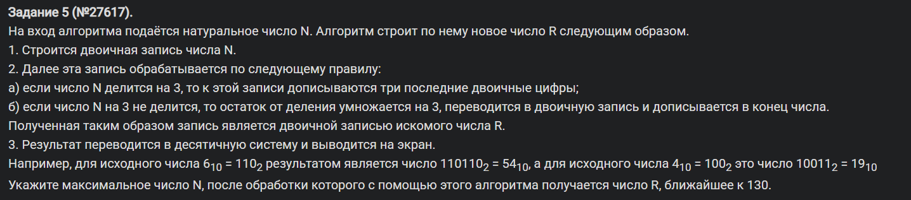
Вот тут остановимся чуть подробнее. Нас очень интересует условие:
… число R, ближайшее к 130.
Что значит ближайшее? Это значит такое, у которого расстояние на координатной прямой до R наименьшее. Т.е. |R - 130| должно быть наименьшим. А как найти наименьшее? Тут мы не паримся, ищем минимум “школьным” способом. Буквально, если у нас эта разность abs(f(n) - 130) < mn т.е. якобы минимального, с которым мы сравниваем, то mn становится новым минимумом, а само n мы запоминаем. Ежели равенство т.е. elif abs(f(n) - 130) == mn тогда просто добавляем в массив, потом разберемся max(otv).
Пример 9)
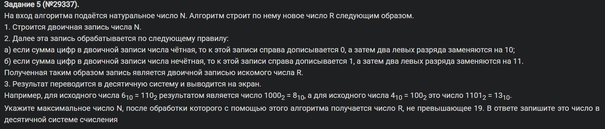
Пример 10)
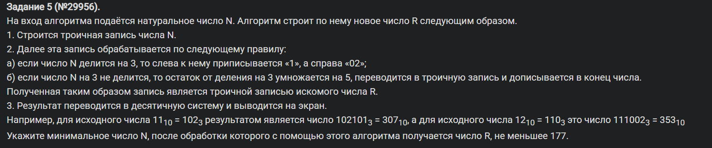
Пример 11)
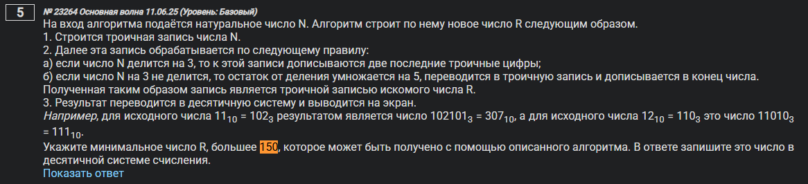
Вот еще один алгоритм перевода в произвольную систему (в данном случае - в троичную):
def troika(x): s = '' while x > 0: s += str(x % 3) x //= 3 s = s[::-1] return s